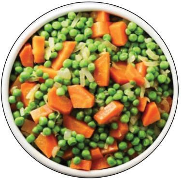

Figure 4.30: Braised peas and carrots

Activity 4.21
Preparation of braised peas and carrot
Prepare braised peas and carrots by following the appropriate method.
What is the importance of adding vegetable stock to this dish?

Revision exercise 4
1.
Poor handling of vegetables may lead to bruising and shrivelling. Describe the effects of having bruised and shrivelled vegetables.
2.
Isabela’s child was complaining of bleeding gums. The doctor interviewed the mother and discovered that the child had been taking green leafy vegetables regularly. What could be the cause of her problem?
3.
Vegetarians can obtain protein from sources other than meat. With examples, explain how they can get enough protein in their meals.
4.
Fruit and vegetable salads provide essential nutrients to our bodies. Explain the factors to consider when choosing fruits and vegetables for salad.
5.
Nutrients present in foods may vary due to several reasons. Explain the causes of nutrient variation in vegetables.
91